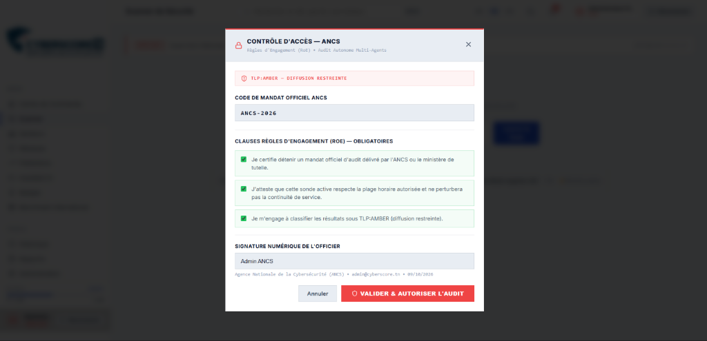
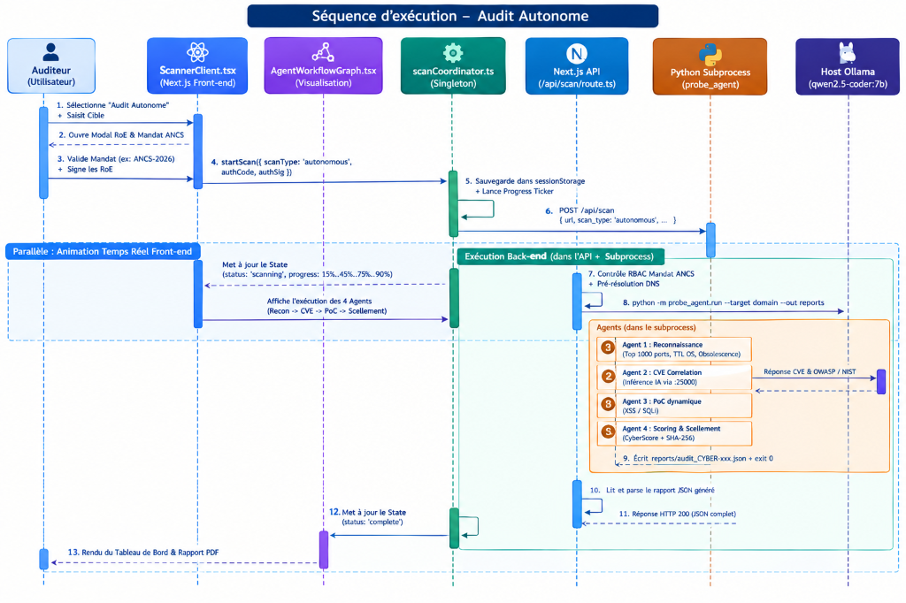
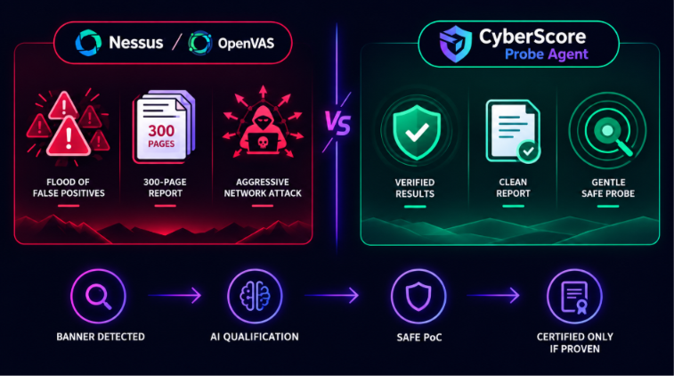
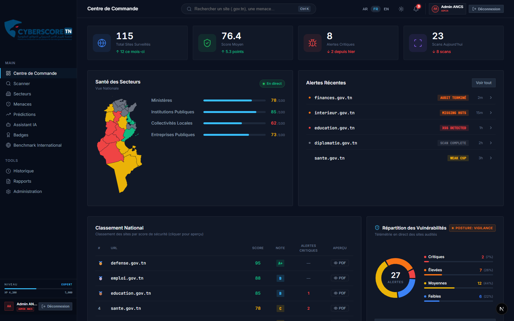
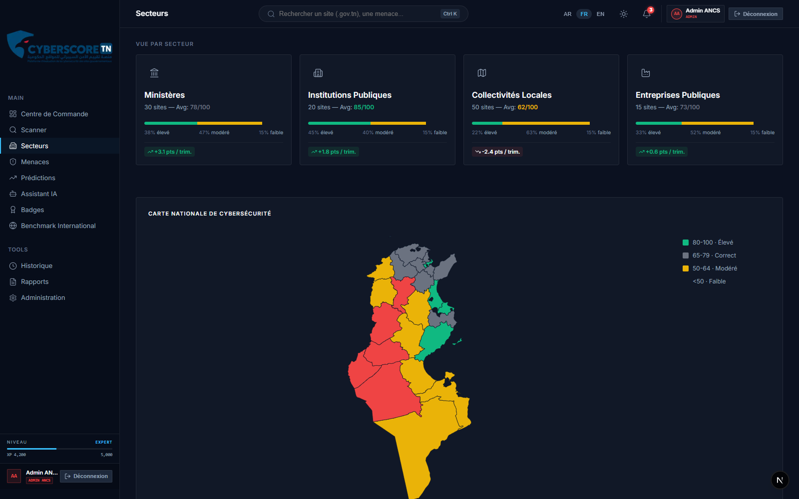
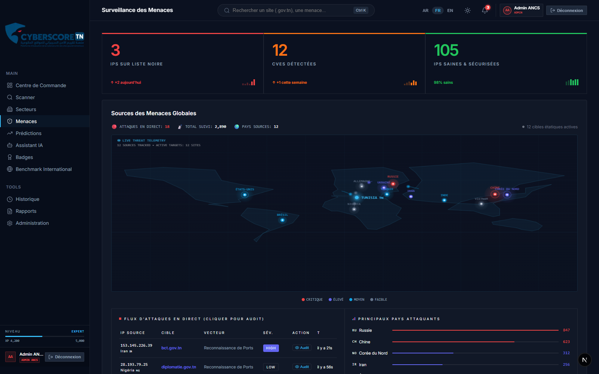
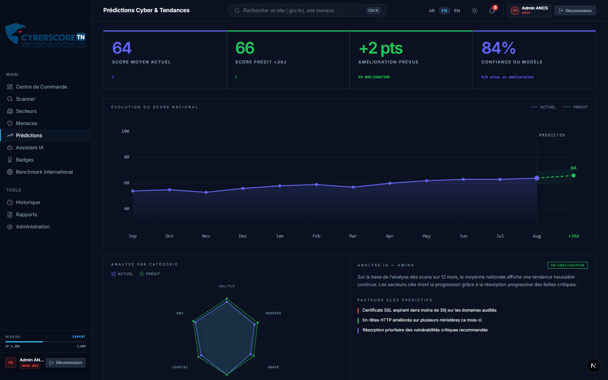
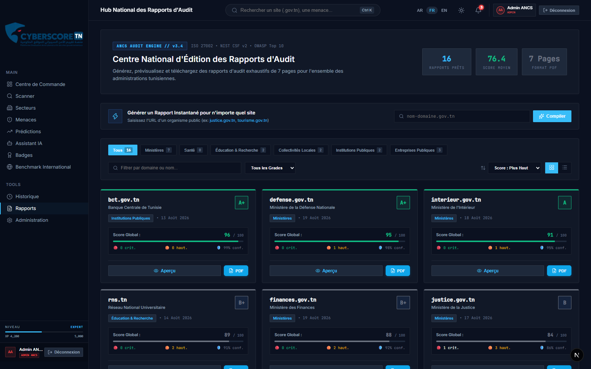
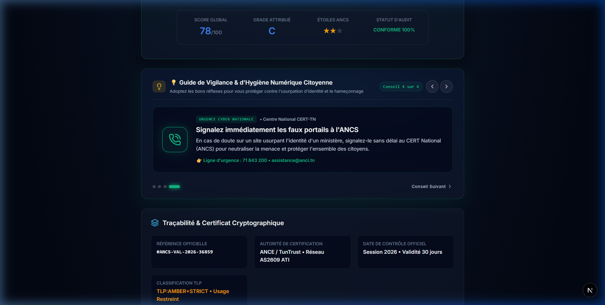
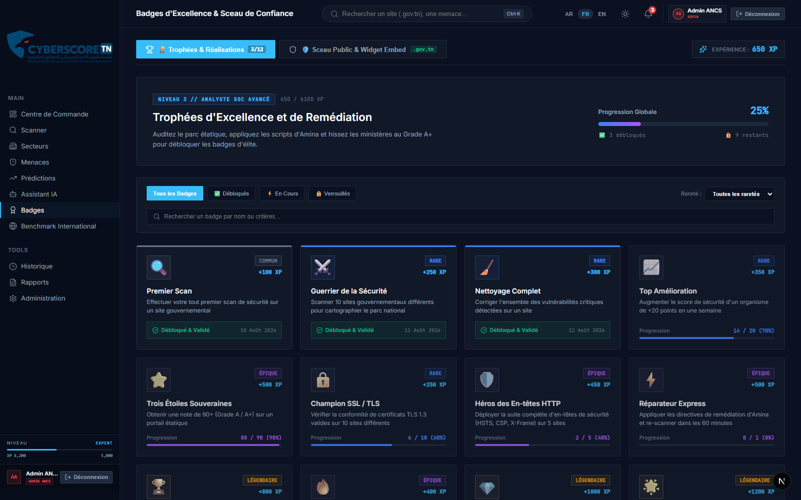

CYBERSCORE TN : Évaluation & Notation Souveraine de la Posture Cyber Nationale
Système d'évaluation de la surface d'attaque externe, de notation objective et d'aide à la remédiation souveraine pour les infrastructures de l'État tunisien.
Parcours & Chronogramme de la Soutenance
- État des lieux national
- Périmètre de 121 sites
- Problématique et besoins
- Analyse de l'existant
- Modèle en 4 tiers
- Topologie Tri-VM isolée
- Nginx & reverse proxy
- Stack technologique
- Orchestrateur 16 facteurs
- Formule et normalisation
- Sonde autonome 4 agents
- IA locale & Preuve (PoC)
- Command Center SOC
- Cartographie sectorielle
- Rapport PDF vectoriel 7p
- Portail de vérification QR
État des Lieux Réel de la Surface Publique Tunisienne
Périmètre d'État régalien (.gov.tn, .tn, .nat.tn)
Score moyen joignable : 65.0 / 100
Score moyen plancher : 48.8 / 100
Grade National Médian : Grade D (Vulnérable)
La Problématique : Asymétrie & Limites des Audits Ponctuels
- Audits Manuels Périodiques : Interviennent tous les 12 à 36 mois, laissant des fenêtres d'exposition béantes entre deux contrôles.
- Photographie Éphémère : Un rapport d'audit devient caduc dès la première mise à jour logicielle ou modification de configuration DNS.
- Absence de Vue d'Ensemble : Chaque ministère audite son périmètre de manière cloisonnée, sans consolidation de la posture nationale.
- Rapports Non Actionnables : Livrables volumineux fournissant rarement des commandes de remédiation prêtes à l'exécution.
- Évaluation Continue Non-Intrusive : Surveillance automatisée et passive de la surface d'attaque externe sans impacter la production.
- Notation Mathématique Objective : Échelle déterministe sur 100 points corrélée aux référentiels normatifs ANCS, ISO 27002 et OWASP.
- Souveraineté Technologique Totale : Traitement 100 % local sans transfert d'aucune donnée d'infrastructure vers des serveurs tiers.
- Assistance à la Remédiation : Génération de snippets de durcissement précis et validation formelle de l'efficacité des correctifs.
Analyse Comparative : Solutions Commerciales vs CyberScore TN
| Critères d'Évaluation | Solutions Commerciales Étrangères (SecurityScorecard, BitSight) |
CyberScore TN (Plateforme Nationale Souveraine) |
|---|---|---|
| Hébergement & Données | SaaS Cloud Étranger (USA / UE) — Télémétrie d'État hébergée hors frontières | 100 % On-Premise / Datacenter National (AS2609 ATI / ANCS) |
| Modèle Économique | Licences annuelles récurrentes très coûteuses en devises étrangères | Développement Souverain Interne, zéro coût de licence récurrente |
| Conformité Réglementaire | Référentiels génériques anglo-saxons (NIST seul), ignorant le droit tunisien | Décret n° 2023-17, guides d'audit ANCS, TunTrust & normes ISO 27002 |
| Intelligence Artificielle | Modèles propriétaires fermés dans le cloud sans transparence algorithmique | LLM Local Souverain (Ollama Qwen2.5-Coder) fonctionnant sans accès Internet |
| Validation Dynamique | Scoring basé sur la réputation IP et des signaux passifs sans vérification active | Sonde Active Multi-Agents avec validation de preuve (PoC) sous mandat |
Architecture Logique en Quatre Tiers
- Next.js 15 (App Router) : Rendu hybride SSR & RSC
- Tailwind CSS v4 : Thème sombre SOC haute densité
- Trilingue : Arabe (RTL), Français, Anglais
- React-PDF : Génération vectorielle 7 pages
- Command Palette : Navigation rapide (Ctrl+K)
- FastAPI (Python 3.12) : Asynchronisme natif
- PostgreSQL 16 : 18 tables relationnelles
- Cache Session : Redis / Valkey 7
- Moteur de Score : Algorithme 16 facteurs
- File Asynchrone : Celery worker ready
- Ollama Host Local : Port 25000 isolé
- Qwen2.5-Coder:7b : Spécialisé code & confs
- Zéro Fuite de Données : 100 % hors-ligne
- Déterminisme : Température 0.1, JSON mode
- Secours : Fallback sur moteur de règles
- 15 Scanners Passifs : DNS, TLS, Headers, etc.
- Exécution Concurrente :
asyncio.gather - Sonde Active (4 Agents) : Port scan, PoC, EOL
- Vérification de Preuve : Zéro faux positif
- Scellement : Empreinte SHA-256 de session
Topologie Infrastructurelle Tri-VM
- Nginx 1.24+ : Terminaison TLS, redirection HTTPS forcée, proxying des flux.
- Next.js 15 : Serveur d'applications Node.js (port 3000).
- Filtrage Entrant : Seuls les ports 80 et 443 sont ouverts sur l'extérieur.
- Aucun Accès Direct BDD : Le frontal ne dialogue qu'avec l'API interne.
- FastAPI (Port 8000) : Gestion des scans, scoring, calculs et authentification.
- PostgreSQL 16 : Persistance chiffrée, 18 modèles, partitions sectorielles.
- Redis / Valkey 7 : Cache de sessions et courtier de messages de scan.
- Isolation Totale : Aucune route par défaut vers Internet public.
- Serveur Ollama (Port 25000) : Modèle Qwen2.5-Coder:7b alloué sur GPU/vCPU.
- Sonde Autonome Multi-Agents : Exécution isolée du sous-processus Python.
- Outils Réseau : Scanneur de ports 40 threads, vérificateur PoC dynamique.
- Contrôle RoE : Déclenchement conditionné par mandat ANCS vérifié.
Flux Réseau, Nginx & Gestion des Sessions
- Contrôle d'Accès par Jeton JWT : Signature cryptographique HMAC-SHA256 avec clé secrète forte et expiration configurable (1440 min / 24h).
- Régulation de Charge (Rate Limiting) : Limitation à 60 requêtes/minute par adresse IP sur les endpoints d'audit pour prévenir tout abus.
- Cloisonnement des Domaines : Isolation étanche entre les sous-domaines de production (`cyberscore.tn`) et les environnements de laboratoire.
- Honnêteté Technique (Limite Prototypale) : L'authentification utilise actuellement des jetons Bearer transmis via l'en-tête Authorization. Le passage à des cookies
HttpOnly; SameSite=Strictpersistés côté serveur constitue un axe de durcissement prévu pour la phase de production.
La Stack Technologique & Justifications Techniques
| Composant / Couche | Choix Technologique Retenu | Justification & Arbitrage d'Ingénierie |
|---|---|---|
| Moteur Backend | FastAPI & Python 3.12-slim | Asynchronisme natif (async/await), validation stricte par Pydantic v2, écosystème riche pour les bibliothèques réseau et cryptographiques. |
| Base de Données | PostgreSQL 16 (18 Modèles) | Fiabilité ACID, requêtage JSONB optimisé pour les preuves de vulnérabilités, intégrité référentielle des organisations et secteurs d'État. |
| Cache & Files d'Attente | Redis (Compose) / Valkey 7 (VM) | Mise en cache rapide des métriques d'audit, courtier pour tâches différées Celery. Utilisation de Valkey 7 en VM garantissant un logiciel 100 % libre. |
| Framework Frontend | Next.js 15 (App Router) + Tailwind v4 | Rendu serveur (RSC), gestion trilingue native avec inversion RTL pour l'arabe, réactivité de l'interface SOC et génération PDF vectorielle intégrée. |
| Moteur IA Souverain | Ollama + Qwen2.5-Coder:7b | Inférence locale sans GPU dédié (quantization 4-bit), haute précision sur les commandes bash/Nginx, respect absolu de la souveraineté des données. |
Les Trois Chemins d'Exécution de la Plateforme
- Rôle : Moteur de référence pour les audits de conformité étatiques.
- Couverture : 15 scanners implémentés + 1 catégorie réservée.
- Parallélisme : Tâches concurrentes par phase via
asyncio.gather. - Algorithme : Score normalisé de 0 à 100 avec pondération sommée à 1.0.
- Rôle : Moteur d'audit passif instantané sans dépendance au backend.
- Couverture : Chiffrement TLS, Headers, DNS, Ports, Cookies, CSP.
- Tolérance : Fonctionne même en cas de coupure de l'API FastAPI.
- Contrôle Souverain : Vérification de l'IP sur le préfixe ATI AS2609.
- Rôle : Simulation de test d'intrusion avec validation de preuve (PoC).
- Gouvernance : Conditionné par Mandat ANCS et signature des RoE.
- Isolation : Sous-processus Python cloisonné avec contrôle SSRF.
- Scellement : Empreinte cryptographique SHA-256 de session.
Orchestrateur : Phases, Concurrence & Tolérance aux Pannes
- Isolation des Timeouts Réseau : Chaque scanner dispose d'une enveloppe temporelle stricte (`timeout + 10s`). Un blocage réseau n'interrompt jamais l'audit global.
- Règle d'Exclusion Équitable : Un scanner en timeout retourne `max_score=0, weight=0`. Il est exclu du calcul et n'ampute pas injustement le score du site audité.
- Pré-validation DNS Obligatoire : Avant d'engager les sondes, une résolution DNS préliminaire vérifie l'existence et l'accessibilité de la cible sur l'Internet public.
- Agrégation Asynchrone :
asyncio.gathergarantit que le temps total d'une phase équivaut au scanner le plus lent de cette phase, et non à la somme des temps.
Les Trois Profondeurs d'Audit : Quick, Standard & Deep
- SSLScanner : Validité TLS, suite de chiffrement.
- HeadersScanner : HSTS, XFO, XCTO, Referrer.
- CookieScanner : Attributs Secure, HttpOnly, SameSite.
- CSPScanner : Directives et intégrité de politique.
- Tous les 4 scanners du mode Quick, plus :
- DNSScanner : DNSSEC, CAA, redondance NS.
- EmailSecurityScanner : SPF, DMARC, MX.
- InfoDisclosureScanner : Bannières, robots, sitemap.
- TechDetectionScanner : CMS, serveurs web, langages.
- SupplyChainScanner : Librairies JS tierces (CDN).
- CertManagementScanner : Expiration, wildcard.
- Tous les 10 scanners Standard, plus Phase 3 :
- OWASPScanner : Détection de vecteurs XSS/SQLi.
- NetworkScanner : Cartographie des services ouverts.
- SubdomainScanner : Énumération des sous-domaines.
- ThreatIntelScanner : Réputation IP (AbuseIPDB).
- HistoricalComplianceScanner : Suivi des scores.
Anatomie d'un Module Scanner & Barème de Déduction
| Niveau de Sévérité | Pénalité par Constatation | Impact Exemple (Max 10 pts) |
|---|---|---|
| CRITICAL | − 3.0 points | Ampute 30 % du score du pilier |
| HIGH | − 2.0 points | Ampute 20 % du score du pilier |
| MEDIUM | − 1.0 point | Ampute 10 % du score du pilier |
| LOW | − 0.5 point | Ampute 5 % du score du pilier |
| INFO | 0.0 point (Neutre) | Informatif sans pénalité de score |
Matrice des 16 Facteurs de Risque & Poids Réels
Formule de Notation, Grades & Étoiles ANCS
- Normalisation Continue : Chaque pilier est projeté sur une échelle indiciaire uniforme de 0 à 100.
- Pondération Dynamique : Seuls les modules ayant retourné un résultat valide entrent au dénominateur.
- Zéro Biais de Timeout : L'indisponibilité d'un résolveur externe n'ampute pas injustement la moyenne du site.
- Déterminisme Formel : Calcul reproductible au centième de point près sans composante stochastique.
| Seuil Score | Grade | Étoiles ANCS | Appréciation Opérationnelle |
|---|---|---|---|
| ≥ 95 | A+ | ★★★ | Excellence souveraine éprouvée |
| ≥ 90 | A | ★★★ | Posturé et conforme aux guides ANCS |
| ≥ 80 | B | ★★☆ | Bon niveau, ajustements mineurs |
| ≥ 70 | C | ★★☆ | Vulnérabilités modérées à traiter |
| ≥ 60 | D | ★☆☆ | Défaillances structurelles notables |
| < 60 | F | ★☆☆ | Critique : Remédiation immédiate requise |
Alignement Référentiels : OWASP, NIST CSF & ISO 27002
Défaut de durcissement autorisant des attaques par dégradation de protocole (SSL Strip) et interception en clair.
Obligation formelle de garantir la confidentialité et l'intégrité absolue des flux de données gouvernementaux circulant sur Internet.
Exigence d'application stricte et continue des mécanismes de chiffrement pour empêcher toute lecture non autorisée.
add_header Strict-Transport-Security "max-age=31536000; includeSubDomains; preload" always;
Audit Actif : Mandat ANCS & Règles d'Engagement (RoE)
- 1. Mandat d'Audit Obligatoire (Code ANCS) : Validation du code d'autorisation contre les habilitations serveur (`ANCS_MANDATES`). Le domaine cible doit être explicitement couvert par le mandat.
- 2. Règles d'Engagement Signées (RoE Modal) : Signature électronique de l'officier certifiant le caractère non-destructif, la conformité au Décret 2023-17 et la responsabilité légale de l'audit.
- 3. Protection Anti-SSRF Intégrée : Interdiction absolue de cibler des adresses de bouclage (`127.0.0.1`), privées (`10.x`, `172.16.x`, `192.168.x`) ou de lien local, protégeant le cœur de réseau.
- 4. Traçabilité Complète : Chaque session d'audit actif enregistre l'identifiant de l'auditeur, le mandat associé et produit une empreinte SHA-256 finale non modifiable.

Architecture de la Sonde Autonome Multi-Agents

- Agent 1 · Reconnaissance Réseau : Découverte des ports, extraction de bannières et cartographie technologique.
- Agent 2 · Analyse des CVEs & Faiblesses : Formulation d'hypothèses de failles via le LLM local (Ollama Qwen2.5-Coder).
- Agent 3 · Validation Dynamique de Preuve : Exécution de sondes PoC bénignes pour rejeter les hallucinations du modèle.
- Agent 4 · Remédiation & Scellement : Calcul du score par déduction (−22/−12/−6/−2) et génération du scellement SHA-256.
Pipeline Multi-Agents & Objet Pivot AuditState
- Enrichissement Séquentiel : Chaque agent reçoit l'état courant, exécute ses traitements dédiés, complète ses attributs assignés et transmet l'état à l'agent suivant.
- Séparation Hypothèses / Preuves : Les suppositions du LLM sont confinées dans
potential_vulnerabilitieset ne peuvent contaminer le rapport sans validation par l'Agent 3. - Sérialisation Complète : La méthode
to_dict()permet d'exporter l'audit en format JSON standard pour archivage ou ingestion SIEM. - Empreinte Intégrée : La méthode
compute_sha256()calcule le hash canonique de l'état dès la fin des travaux de l'Agent 4.
Outils de Reconnaissance : Connect Scan, Bannières & EOL
- 40 Threads Max : Parallélisme borné évitant toute saturation de la cible.
- 33 Services Cartographiés : SSH (22), Telnet (23), HTTP (80/443), MySQL (3306), Redis (6379), etc.
- Bannières Réseau : Capture des chaînes d'accueil de services.
- Évaluation du Risque : Tag
is_riskyautomatique sur les protocoles en clair.
- Analyse de Valeur TTL : TTL 64 (Linux/Unix) vs TTL 128 (Windows Server).
- Extraction En-têtes : Analyse des bannières
ServeretX-Powered-By. - Endpoints Standards : Recherche de routes exposées (`/robots.txt`, `/.git/HEAD`).
- Détection CMS : Signatures WordPress, Joomla, Drupal.
- 8 Motifs Logiciels : Signatures EOL pour PHP, Apache, Nginx, OpenSSH, etc.
- Contrôle de Fin de Vie : Alertes sur versions dépréciées (PHP 5.x, PHP 7.x, OpenSSH 7.x).
- Corrélation CVE : Qualification des vulnérabilités associées aux versions obsolètes.
- Génération Remédiation : Commandes apt-get de mise à niveau ciblée.
La Règle Zéro Faux Positif & Vérification de Preuve
- Faits Réseau Factuels (Préservés) : Tout port ouvert mesuré, en-tête absent ou logiciel en fin de vie détecté par l'Agent 1 est automatiquement validé (`poc_verified = True`).
- Hypothèses Spéculatives IA (Filtrées) : Toute faille théorique générée par le modèle sans validation par test dynamique actif est supprimée des constatations officielles.
- Sondes Bénignes Non Destructives : Tests par chaîne de contrôle (`cs789
` pour XSS, quote simple pour SQLi) sans aucune charge malveillante. - Limite Technique Honnête : Le test d'exposition de fichiers sensibles valide tout retour HTTP 200 de plus de 10 octets, susceptible de laisser passer un faux positif en cas de page d'erreur personnalisée "soft-404".

Remédiation, Score Déductif & Scellement SHA-256
| Sévérité Validée | Déduction par Faille | Seuils de Grade Sonde |
|---|---|---|
| Critique | − 22 points | Grade A : Score ≥ 85 / 100 |
| Haute | − 12 points | Grade B : Score ≥ 70 / 100 |
| Moyenne | − 6 points | Grade C : Score ≥ 55 / 100 |
| Faible | − 2 points | Grade D : Score ≥ 40 / 100 |
| Plancher | Borné à [10, 100] | Grade F : Score < 40 / 100 |
- Digest Déterministe : L'empreinte dépend strictement des failles validées et du score. Tout changement de note modifie le hash.
- Rigueur Scientifique : Il s'agit d'une empreinte cryptographique de session (digest) garantissant la non-altération, et non d'une signature asymétrique (clé privée Ed25519 en perspective).
IA Souveraine Découplée : « Le LLM propose, la preuve dispose »
- Le LLM ne Score Jamais : L'IA est privée de tout pouvoir de décision sur la note numérique finale ou sur le grade.
- Le Rôle de Conseiller Technique : Il suggère des commandes de remédiation adaptées aux bannières de versions constatées.
- Vérification Dynamique Obligatoire : Toute hypothèse de vulnérabilité non prouvée par l'Agent 3 est impitoyablement écartée.
- Moteur Déterministe de Secours : En cas de panne du service Ollama (`AI_OFFLINE`), le système bascule automatiquement sur sa base de règles locales certifiées.
Command Center & Vue d'Ensemble SOC

- Télémétrie en Temps Réel : Agrégation de la note nationale globale, du volume d'organismes audités et des tendances d'évolution.
- Navigation Éclair (Ctrl+K) : Palette de commande permettant d'accéder à n'importe quel ministère ou domaine en moins de 3 frappes au clavier.
- Filtrage par Criticité : Identification instantanée des portails en Grade D ou F nécessitant un plan de remédiation d'urgence.
- Support Multilingue : Bascule dynamique Arabe (RTL) / Français sans rechargement de page.
Cartographie des 121 Entités Publiques par Secteur

Surveillance des Menaces & Flux d'Attaque

- Veille sur les Vecteurs Émergents : Corrélation des ports ouverts (SSH, Telnet, RDP) avec les campagnes de balayage mondial.
- Renseignement sur les Menaces : Connecteurs d'API réputationnelle (AbuseIPDB, VirusTotal) pour qualifier les IP assaillantes.
- Indicateurs d'Alerte Précoce : Détection des augmentations anormales de requêtes sur les CMS étatiques.
- Mention de Transparence Scientifique : Illustration : flux visuels simulés reproduisant les cinématiques d'attaque réelles pour les besoins d'entraînement du SOC.
Moteur Prédictif à +30 Jours : Heuristique d'Évolution

- Modèle Heuristique à +30 Jours : Calcul de tendance par régression linéaire pondérée sur les deltas de scores observés.
- Vélocité de Remédiation : Intégration du délai moyen de traitement des alertes propre à chaque ministère.
- Veille CVE Prédictive : Pondération négative anticipée dès la publication d'un bulletin d'alerte ANCS sur un CMS en production.
- Feuille de Route R&D : L'entraînement d'un réseau récurrent LSTM à +90 jours constitue une perspective post-soutenance conditionnée à la collecte de données historiques sur 24 mois.
Livrable d'État : Rapport Officiel Vectoriel PDF 7 Pages

Portail Public de Vérification par QR Code

- Vérification Instantanée : Lecture du QR Code sur document imprimé ou badge web redirigeant vers le serveur souverain.
- Contrôle d'Intégrité : Vérification de l'empreinte SHA-256 pour prouver que le rapport n'a pas été falsifié.
- Indicateur de Souveraineté : Confirmation que le site est hébergé sur le sol tunisien (ATI AS2609).
- Sensibilisation Anti-Phishing : Fiches interactives de sensibilisation aux réflexes de cyber-sécurité pour les usagers du service public.
Modèle de Menace du QR Code & Contrôle Souverain
- Usurpation de Domaine (Typosquatting) : Création d'un domaine frauduleux imitant l'adresse de vérification officielle.
- Quishing (Phishing par QR Code) : Remplacement physique ou numérique du QR code officiel sur un site compromis.
- Faux Certificat Local : Tentative de falsification visuelle d'une page de vérification déconnectée.
- Clarification Légale : Contrairement à une idée reçue, seul le préfixe
.gov.tnest strictement réservé à l'État (les.tngénériques restant ouverts aux entreprises).
- Validation de l'URL Canonique : Le portail ne valide les attestations que sous le domaine souverain strict
cyberscore.tn. - Test de Préfixe IP Souverain (ATI AS2609) : Vérification de l'appartenance de l'IP aux blocs souverains tunisiens (`193.95.0.0/18`, `41.224.0.0/13`, `197.10.0.0/16`).
- Pénalité Mesurée (−12 pts) : Tout site étatique hébergé hors territoire souverain subit une déduction de 12 points sur son score réseau, sans écrasement arbitraire à zéro.
- Double Signature Visuelle : Affichage de l'empreinte de session SHA-256 intégrale consultable par l'usager.
Badges de Confiance & Gouvernance RBAC

- Badges Dynamiques SVG : Vignettes intégrables affichant le grade officiel ANCS et redirigeant vers l'attestation en un clic.
- Matrice des Rôles RBAC : Séparation stricte entre Observateur (lecture seule), Auditeur (périmètre ministériel) et Super-Admin ANCS.
- Niveaux de Criticité (1 à 5) : Pondération du niveau d'urgence des alertes selon l'impact régalien de l'institution.
- Kill-Switch Opérationnel : Commande d'urgence permettant d'interrompre instantanément toute sonde active sur incident.
Résultats Globaux de la Campagne Nationale d'Audit
| Grade Attribué | Volume d'Entités | Pourcentage | Statut Opérationnel |
|---|---|---|---|
| Grade A (≥ 90) | 2 sites | 1.7 % | Excellence cyber éprouvée |
| Grade B / B+ (80-89) | 7 sites | 5.8 % | Posturé, durcissement mineur |
| Grade C / C+ (70-79) | 32 sites | 26.4 % | Vulnérabilités à corriger |
| Grade D (60-69) | 54 sites | 44.6 % (Majorité) | Faiblesses structurelles |
| Grade F (< 60) | 26 sites | 21.5 % (Critique) | Urgence absolue de sécurité |
- 1. Absence de CSP (Content Security Policy) : Plus de 80 % des sites ne définissent aucune directive CSP, laissant les citoyens exposés aux injections XSS.
- 2. Défaut de Chiffrement Forcé (HSTS Manquant) : Absence d'en-tête `Strict-Transport-Security`, autorisant des attaques par dégradation de protocole (SSL Strip).
- 3. Enregistrements E-mail Imparfaits : Politiques SPF permissives (`~all` ou `?all`) et absence d'enregistrements DMARC stricts, facilitant l'usurpation de courriels d'État.
- 4. Versions Logicielles Obsolètes (EOL) : Présence de CMS WordPress non maintenus et de serveurs web divulguant des numéros de version dépréciés.
Banc d'Essai & Validation des Tests Unitaires
Exécution automatisée validant les frontières de grades, les déductions et l'invariance déterministe.
- Somme Unitaire des Poids :
test_weights_sum_to_one()prouve que la somme des 16 coefficients de risque est égale à 1.000 à $10^{-9}$ près. - Exclusion Sans Biais :
test_failed_scanner_is_excluded()démontre qu'un scanner en timeout réseau est exclu sans abaisser arbitrairement le score à 0. - Zéro Faux Positif :
test_poc_agent_zero_false_positive_rule()prouve que les hypothèses spéculatives de l'IA sont rejetées tandis que les faits réseau sont préservés. - Déterminisme de l'Empreinte :
test_sha256_determinism()vérifie l'invariance du hash pour un même audit et sa sensibilité au moindre changement de score.
Tests de Résilience & Limites Techniques Identifiées
- Résistance aux Timeouts Réseau : Isolation de chaque scanner sous
asyncio.wait_for, empêchant un serveur défaillant de bloquer l'audit. - Tolérance à la Défaillance de l'IA : Basculement transparent vers le moteur déterministe si le serveur Ollama est saturé ou hors-ligne.
- Protection Anti-SSRF : Blocage systématique de toute cible résolvant vers une adresse IP privée ou de bouclage interne.
- Sécurité des Entrées : Filtrage strict du domaine par expression régulière (
HOSTNAME_RE), interdisant toute injection d'arguments bash.
- Le Biais Soft-404 : Le vérificateur de fichiers sensibles accepte tout code HTTP 200 de plus de 10 octets, pouvant admettre un faux positif sur les pages d'erreur personnalisées mal configurées.
- Test Souverain par Préfixe IP : La souveraineté teste les préfixes réseau de l'ATI (AS2609) sans interroger les tables de routage BGP en temps réel.
- Authentification sur /api/scan : L'endpoint d'audit de la version actuelle ne vérifie pas de session utilisateur préalable, constituant une limite de prototype de laboratoire.
- Vérification Manuelle Requise : Les scores n'ont pas encore été corrélés à grande échelle avec des services tiers commerciaux (Mozilla Observatory, SSL Labs).
Démonstration Opérationnelle de la Plateforme en Direct
Bascule sur la plateforme active : Nginx 443 → Next.js 3000 · FastAPI 8000 · Ollama 25000
Connexion Observateur public ➔ Tentative d'accès à /admin ➔ Blocage immédiat 403 ➔ Connexion Auditeur ANCS.
Recherche Ctrl+K ➔ Audit passif Standard (10 scanners) sur domaine .gov.tn ➔ Ventilation par piliers.
Saisie du mandat ANCS & signature RoE ➔ Sonde 4 agents sur cible de lab ➔ Validation PoC & élimination de faux positif.
Téléchargement de l'attestation vectorielle 7p scellée SHA-256 ➔ Scan QR Code ➔ Vérification sur /verify.
docs/demo/backup.mp4).
Target Lab : lab.cyberscore.tn / DMZ Test Target
Bilan des Réalisations : Une Solution Souveraine Éprouvée
- Double Moteur d'Audit : Orchestrateur passif 16 facteurs + Sonde active 4 agents avec validation PoC.
- Règle Zéro Faux Positif : Filtrage systématique des hypothèses de l'IA pour ne conserver que les failles prouvées.
- Architecture Tri-VM : Séparation étanche entre DMZ publique, Core API et exécuteur de sonde.
- Livrables d'État Normés : Rapports vectoriels de 7 pages scellés et portail de vérification par QR code.
- Indépendance Technologique : Traitement 100 % local (AS2609 ATI), éliminant toute fuite de métadonnées d'État à l'étranger.
- Maîtrise Budgétaire : Suppression totale des coûts de souscription récurrents en devises fortes.
- Adéquation Légale Décret 2023-17 : Alignement parfait avec les directives et nomenclatures de l'ANCS.
- Baromètre National Réel : Première base de données consolidée sur 121 portails publics tunisiens.
- Code Source Intégral : Backend FastAPI, Frontend Next.js 15, Sonde Python documentée.
- Banc de Tests Automatisé : 17 tests unitaires réussis avec profiling de couverture.
- Jeu de Données Réel : Base 121 domaines avec historique et ventilation sectorielle.
- Attestation Homologuée : Spécification de scellement et interface citoyenne.
Limites Identifiées & Perspectives d'Évolution
Remplacement de l'empreinte de session SHA-256 par une véritable signature numérique asymétrique (Ed25519 ou RSA 4096) signée par la clé privée d'autorité de l'ANCS, conférant une valeur probante pleine et entière à l'attestation PDF.
Évolution du contrôle d'hébergement souverain : abandon du filtrage statique par préfixes IP au profit d'une interrogation en temps réel des annonces BGP (AS2609 ATI) via connecteur Whois / RPKI AFRINIC direct.
Déportation du journal d'audit applicatif depuis le localStorage client vers un stockage immuable serveur en écriture seule (Append-Only Log WORM) couplé à la génération de cookies de session HttpOnly; SameSite=Strict côté serveur.
Déploiement de la file asynchrone Celery/Redis sur une grappe de workers Kubernetes distribués, permettant d'auditer l'intégralité des portails publics, communes et Opérateurs d'Importance Vitale (OIV) de manière hebdomadaire.
Remerciements & Ouverture de la Session de Questions
CYBERSCORE TN : Pour une Souveraineté Numérique Active de la République Tunisienne
Annexe : Table Complète des 16 Poids & Règles
| Catégorie | Clé Système | Poids (%) | Max Pts | Contrôles Spécifiques Réalisés |
|---|---|---|---|---|
| OWASP Top 10 | owasp | 15 % (0.15) | 15 | XSS, SQLi, erreurs verbeuses, injections, endpoints non protégés |
| Sécurité SSL / TLS | ssl | 12 % (0.12) | 12 | Validité certificat, protocoles TLS 1.2/1.3, force du chiffrement |
| Headers Sécurité | headers | 10 % (0.10) | 10 | HSTS, X-Frame-Options, X-Content-Type-Options, Referrer-Policy |
| Sécurité Réseau | network | 8 % (0.08) | 8 | Ports ouverts non sécurisés (21, 23, 3389), bannières sensibles |
| Patching / CVEs | patching | 8 % (0.08) | 8 | Catégorie réservée pour corrélation CVE locale des dépendances |
| Santé DNS | dns | 5 % (0.05) | 5 | DNSSEC (AD flag), enregistrements CAA, redondance serveurs NS |
| Content Security Policy | csp | 5 % (0.05) | 5 | Directives default-src, script-src, absence d'unsafe-inline |
| Divulgation d'Info | info | 5 % (0.05) | 5 | Fichiers sensibles robots.txt, .git, bannières serveurs verbeuses |
| Sous-domaines | subdomain | 5 % (0.05) | 5 | Énumération de surface externe, sous-domaines orphelins (takeover) |
| Threat Intelligence | threat_intel | 5 % (0.05) | 5 | Réputation IP publique, signalements d'attaques (AbuseIPDB) |
| Fraîcheur Tech CMS | tech | 5 % (0.05) | 5 | Détection de versions obsolètes de WordPress, Drupal, Nginx |
| Sécurité Cookies | cookie | 4 % (0.04) | 4 | Présence des flags de protection Secure, HttpOnly, SameSite |
| Sécurité E-mail | email | 4 % (0.04) | 4 | Enregistrements SPF stricts (-all/~all), conformité DMARC, MX |
| Supply Chain | supply_chain | 4 % (0.04) | 4 | Dépendances JS externes hébergées sur CDN non souverains |
| Gestion Certificats | cert | 3 % (0.03) | 3 | Délai avant expiration (> 30 jours), type wildcard vs dédié |
| Conformité Historique | history | 2 % (0.02) | 2 | Stabilité de la posture dans le temps, absence de régressions |
Annexe : Structure JSON du Finding & Schéma
- Compatibilité SIEM / SOAR : Schéma directement ingérable par Elasticsearch, OpenSearch, Wazuh ou Splunk.
- Trilinguisme Intégré : Stockage sous forme de dictionnaire clé-valeur (`fr`, `ar`, `en`), évitant toute rupture d'encodage.
- Traçabilité des Preuves : Champ
evidenceconservant la chaîne de diagnostic brute à des fins d'opposabilité légale. - Score CVSS V3.1 : Qualification chiffrée de 0.0 à 10.0 permettant un tri automatisé par niveau de risque réel.
Annexe : Catalogue des Endpoints API REST (FastAPI)
| Méthode | Route Endpoint | Contrôle d'Accès | Description Fonctionnelle |
|---|---|---|---|
POST | /api/v1/auth/login | Public | Authentification par identifiants et émission du jeton Bearer JWT |
GET | /api/v1/auth/me | Bearer Token | Restitution de l'identité et du rôle de l'officier de sécurité |
POST | /api/v1/scans/scan | Bearer Token | Déclenchement d'un audit de conformité passif (Quick, Standard, Deep) |
GET | /api/v1/scans/{scan_id} | Bearer Token | Consultation des scores, grades et constatations détaillées d'un audit |
GET | /api/v1/organizations/ | Lecture Seule | Liste des 121 organismes publics tunisiens classés par secteur |
PUT | /api/v1/organizations/{id} | Admin ANCS | Mise à jour du niveau de criticité (1 à 5) et du contact RSSI |
POST | /api/v1/ai/chat | Bearer Token | Dialogue interactif avec l'assistant souverain Amina (Ollama local) |
GET | /api/v1/benchmark/national | Public | Calcul des métriques nationales consolidées et médianes sectorielles |
Annexe : Modèles Relationnels PostgreSQL (18 Tables)
organization.py: 121 organismessector.py: 4 grands secteurswebsite.py: Domaines & URLssubdomain.py: Cartographie externe
scan.py: Sessions d'auditresult.py: Résultats par catégoriescore.py: Historique temporelprediction.py: Modèle à +30 jours
threat_intel.py: Données d'IPssupply_chain.py: Dépendances CDNtechnology.py: CMS et versionssecurity_badge.py: Badges officiels
framework.py: OWASP/NIST/ISOalert.py: Notifications RSSIbenchmark.py: Baselines nationales
user.py: Rôles & RBACai_chat.py: Historique Aminabadge.py: Métriques publiques
Annexe : Critères d'Attribution des Badges de Sécurité
- Zéro Faille Critique ou Haute : Aucune vulnérabilité sévère tolérée.
- Chiffrement TLS Exemplaire : Protocoles TLS 1.3 / 1.2 stricts et HSTS actif.
- Résilience DNSSEC : Zone signée avec enregistrements CAA conformes.
- Hébergement Souverain : Hébergement vérifié sur le réseau national ATI.
- Zéro Faille Critique : Tolérance bornée aux failles moyennes traitées.
- Protection des En-têtes : Au moins 5 headers de durcissement actifs.
- Sécurité Messagerie : Enregistrements SPF configurés sans laxisme.
- Certificat Valide : Expiration supérieure à 30 jours civils.
- Niveau de Base Assuré : Chiffrement HTTPS fonctionnel sur le portail.
- Pas de Port Dangereux : Ports d'administration distante fermés.
- Plan de Remédiation : Calendrier d'intervention ANCS accepté.
- Seuil d'Éligibilité : Les sites en Grade C, D ou F sont non éligibles.
Annexe : Méthodologie du Benchmark International
- ITU Global Cybersecurity Index (GCI) : Rapport de référence de l'ONU évaluant l'engagement cyber selon 5 piliers institutionnels.
- National Cyber Security Index (NCSI) : Métriques d'évaluation de la cyber-défense gouvernementale développées par l'Estonie.
- Caractère Illustratif Strict : Aucun scan actif ou passif n'a été émis vers des domaines de gouvernements étrangers.
- Rôle Opérationnel : Fournir une référence de comparaison aux directeurs généraux pour situer l'indice national tunisien.
| Pays / Nation | Score Indiciaire | Rang Régional / Global | Statut dans l'Outil |
|---|---|---|---|
| Estonie | 98.2 / 100 | Top 3 Mondial (GCI) | Baseline de référence absolue |
| France | 96.5 / 100 | Tier 1 Leader (GCI) | Baseline européenne |
| Maroc | 82.4 / 100 | Top 5 Afrique (GCI) | Benchmark régional Afrique du Nord |
| Tunisie (Cible) | 57.6 / 100 | Campagne réelle 121 sites | Mesure Réelle Empirique |
Annexe : Matrice Détaillée des 4 Secteurs Publics
| Secteur N° | Dénomination Officielle | Volume d'Entités | Score Moyen | Criticité Moyenne | Exemples d'Organismes Audités |
|---|---|---|---|---|---|
| Secteur 1 | Ministères Régaliens | 45 entités | 59.3 / 100 | Criticité 4.1 / 5 | Finances, Défense Nationale, Intérieur, Justice, Santé, Éducation |
| Secteur 2 | Institutions Publiques | 17 entités | 62.8 / 100 | Criticité 4.4 / 5 | ANCS, Banque Centrale de Tunisie (BCT), CNI, ATI, ISIE, INPDP |
| Secteur 3 | Collectivités Locales | 42 entités | 51.9 / 100 | Criticité 3.5 / 5 | Gouvernorats de Tunis, Sfax, Sousse, Bizerte, Municipalités régionales |
| Secteur 4 | Entreprises Publiques | 17 entités | 62.1 / 100 | Criticité 4.8 / 5 | STEG (Électricité/Gaz), SONEDE (Eaux), Postes, Télécoms, Transports |
Annexe : Glossaire & Référentiels Normatifs
Agence Nationale de la Cybersécurité (Tunisie), autorité nationale de régulation et de veille cyber (Décret 2023-17).
Cybersecurity Framework du NIST articulé autour de 6 fonctions : Gouvernance, Identification, Protection, Détection, Réponse, Récupération.
Référentiel mondial des contrôles de sécurité de l'information (mesures organisationnelles, humaines, physiques et technologiques).
Consensus mondial sur les 10 risques de sécurité les plus critiques pesant sur les applications et services web modernes.
Condensat cryptographique unidirectionnel de 256 bits garantissant l'intégrité stricte des données d'audit contre toute falsification.
Règles d'engagement formelles définissant le périmètre, les contraintes et les limites légales autorisées d'un audit de sécurité actif.